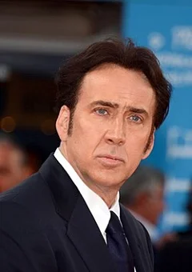

Spider-Man: Beyond the Spider-Verse (2027)
| Movie | Release Date | Poster |
|---|---|---|
| Spider-Man: Beyond the Spider-Verse action · adventure · superhero | Upcoming |  |
| Trailer |
|---|
| No official trailer is available for this film. |
| Rotten Tomatoes | Metacritic | IMDb |
|---|---|---|
| Not available | Not available | View on IMDb |
| Overview |
|---|
Spider-Man: Beyond the Spider-Verse is an upcoming American animated superhero film based on the Marvel Comics character Miles Morales / Spider-Man. Produced by Columbia Pictures and Sony Pictures Animation, it is the direct sequel to Spider-Man: Across the Spider-Verse (2023) and the final installment in the Spider-Verse trilogy. Shameik Moore stars as the voice of Miles, alongside an ensemble cast featuring Hailee Steinfeld, Brian Tyree Henry, Lauren Vélez, Jake Johnson, Jason Schwartzman, Karan Soni, John Mulaney, Kimiko Glenn, Daniel Kaluuya, Mahershala Ali, Nicolas Cage, and Oscar Isaac. Bob Persichetti and Justin K. Thompson direct the film from a screenplay by the writing team of Phil Lord and Christopher Miller alongside David Callaham. Full plot (spoilers)Spider-Man: Beyond the Spider-Verse begins immediately after the events of Spider-Man: Across the Spider-Verse (2023), following Miles Morales trapped and on the run in an alternate universe while trying to save his family. |
| Actor | Character | Photo |
|---|---|---|
| Shameik Moore | Miles Morales / Spider-Man A teenager who took over as the Spider-Man of Earth-1610 after the death of his reality's Peter Parker and is trapped in an alternate universe , Earth-42 |  |
| Hailee Steinfeld | Gwen Stacy / Spider-Gwen A version of Gwen Stacy who is the Spider-Woman of Earth-65 and Miles's love interest |  |
| Brian Tyree Henry | Jefferson Morales (nee Davis) Miles's father and a police officer, who was recently promoted to captain | No photo |
| Lauren Vélez | Rio Morales Miles's mother and a nurse | No photo |
| Jake Johnson | Peter B. Parker / Spider-Man An older Spider-Man from Earth-616B and Miles's mentor who is now married to his reality's Mary Jane Watson and has a daughter named Mayday | No photo |
| Jason Schwartzman | Dr. Johnathon Ohnn / The Spot A supervillain and former Alchemax scientist who, after an accident, became covered with interdimensional portals that allow him to travel through space and different universes. | |
| Karan Soni | Pavitr Prabhakar / Spider-Man India An alternate universe version of Peter Parker based in Mumbattan, India |  |
| John Mulaney | Peter Porker / Spider-Ham A talking animal -based Spider-Man from a cartoon -like anthropomorphic universe, who was once a spider, bitten by a radioactive pig | No photo |
| Daniel Kaluuya | Hobie Brown / Spider-Punk A punk rock version of Spider-Man from Earth-138 who uses his guitar as his main weapon |  |
| Mahershala Ali | Aaron Davis The Earth-42 version of Miles's deceased uncle | No photo |
| Nicolas Cage | Peter Parker / Spider-Man Noir A Spider-Man from a monochromatic universe set in the 1930s |  |
| Kimiko Glenn | Peni Parker / SP//dr A young Japanese-American girl from an alternative and anime -like universe who copilots her late father's biomechanical suit with a radioactive spider that she shares a telepathic link with | No photo |
| Oscar Isaac | Miguel O'Hara / Spider-Man 2099 A " ninja - vampire " Spider-Man from Earth-928 set in the year 2099 , who is the leader of the Spider-Society, a group of Spider-People from alternate universes tasked with protecting the multiverse | No photo |
| Krondon | – | No photo |
| Greta Lee | – | No photo |
| Jharrel Jerome | – | No photo |
| Detail | Value |
|---|---|
| Directed by | Bob Persichetti, Justin K. Thompson |
| Written by | David Callaham, Phil Lord, Christopher Miller |
| Produced by | Avi Arad, Phil Lord, Amy Pascal, Christopher Miller, Jinko Gotoh |
| Music by | Daniel Pemberton |
| Cinematography | Alice Brooks |
| Edited by | Not available |
| Production companies | Not available |
| Distributed by | Sony Pictures |
| Running time | Not available |
| MPAA rating | Not rated |
| Budget | Not available |
| Box office | Not available |
Overview, plot, and cast descriptions are from Wikipedia (CC BY-SA 4.0). Credits, ratings, and box office are from Wikidata.